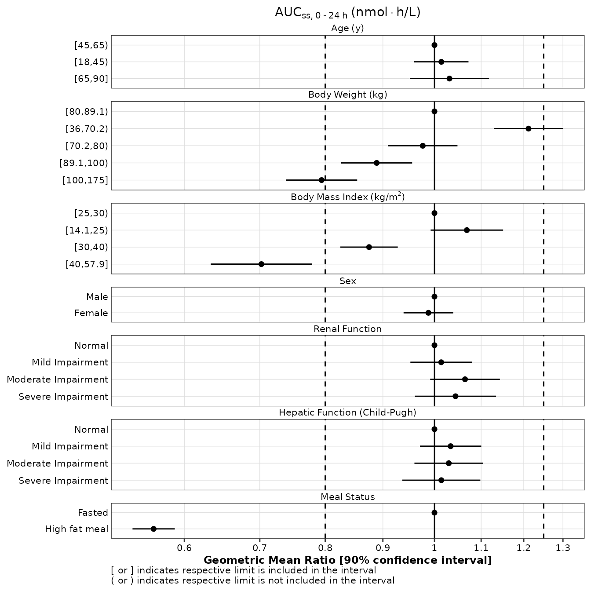
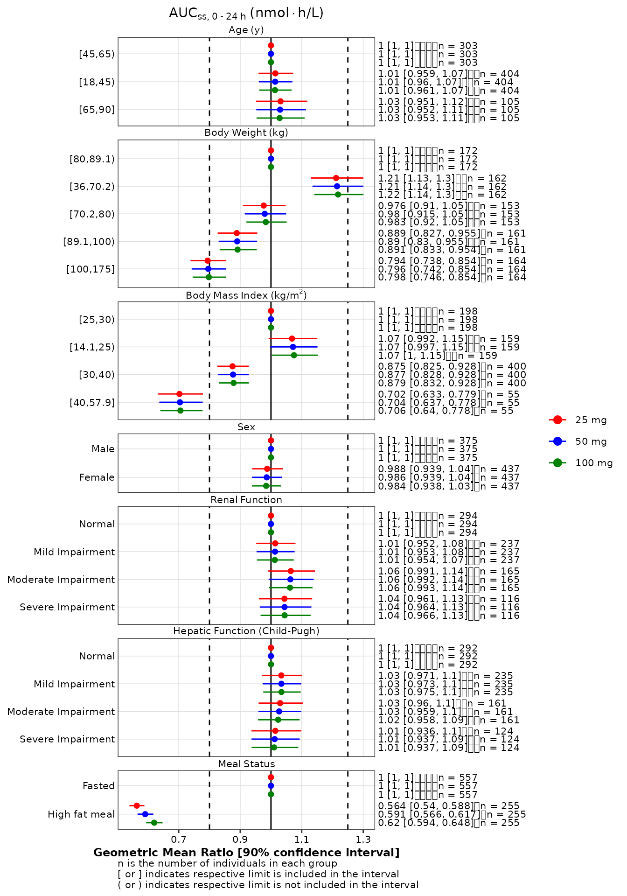

Forest plot creation with ggcognigen
Sebastien Bihorel
for Cognigen, a SimulationsPlus Company
Source:vignettes/forest.Rmd
forest.RmdThe creation of forest plots with ggcognigen is
supported by 3 functions:
-
make_gmr_data: to calculate the geometric means (GM) and geometric mean ratios (GMR) of selected variables for a select list of covariates; -
make_forestplot: to create forest plots based upon a data object that is typically returned by the previous function; and -
make_gmr_table: to create corresponding report-ready tables in HTML, Microsoft Word, or PharmTeX-compliant format.
The make_gmr_data and make_forest_plot
functions accept both standard and non-standard evaluation notations.
Click here to see an example.
make_gmr_data
The data to be processed by make_gmr_data must meet the
following expectations:
- The data object must a single data.frame object.
- The data in this data.frame object must be provided in wide format.
- It must contain a variable that uniquely identify individuals.
- It must contain one record per individual and, if requested, per
stratification variable. In any cases,
make_gmr_datainternally filters the provided data.frame to the first record per individual and, if requested, per stratification variable. - The variables for which the GMs and GMRs are calculated must be continuous variables.
- The covariates defining the groups according to which the GMs and GMRs are calculated must be factor variables.
The creation of such data objects is out of the scope of this vignette.
The operation of the make_gmr_data is explained in the
examples shown below, starting from a basic case and finishing with the
use of advanced settings. All examples rely on a dataset called
expo which is distributed within the
ggcognigen package. The expo dataset provides
3 steady-state exposures (AUCSS, CMAXSS, and CMINSS) that were predicted
in a small population of individuals at 3 different dose levels (25, 50,
and 100 mg), using a 1-compartment model with dose-dependent absorption.
The dataset also includes the individual values of pharmacokinetic
parameters (CL, V, KA, and F1) and several covariate values.
glimpse(expo)
#> Rows: 2,436
#> Columns: 17
#> $ ID <int> 1, 2, 3, 4, 5, 6, 7, 8, 9, 10, 11, 12, 13, 14, 15, 16, 17, 18, …
#> $ DOSE <fct> 25 mg, 25 mg, 25 mg, 25 mg, 25 mg, 25 mg, 25 mg, 25 mg, 25 mg, …
#> $ AGE <fct> "[18,45)", "[65,90]", "[45,65)", "[18,45)", "[18,45)", "[18,45)…
#> $ WTKG <fct> "[70.2,80)", "[89.1,100)", "[36,70.2)", "[80,89.1)", "[70.2,80)…
#> $ BMI <fct> "[14.1,25)", "[30,40)", "[25,30)", "[30,40)", "[30,40)", "[14.1…
#> $ SEXF <fct> Male, Female, Male, Female, Male, Female, Male, Female, Male, M…
#> $ RFCAT <fct> Severe Impairment, Mild Impairment, Moderate Impairment, Severe…
#> $ CPCAT <fct> Normal, Severe Impairment, Normal, Severe Impairment, Normal, M…
#> $ HFM <fct> High fat meal, Fasted, High fat meal, Fasted, Fasted, High fat …
#> $ CL <dbl> 12.0860, 18.9160, 19.1000, 14.2270, 11.2520, 9.3767, 8.0459, 11…
#> $ V <dbl> 131.130, 233.300, 116.880, 237.340, 117.420, 94.863, 132.580, 2…
#> $ KA <dbl> 0.34605, 1.10200, 0.32781, 1.03850, 0.68898, 0.97022, 0.99181, …
#> $ F1 <dbl> 0.19111, 0.30985, 0.28215, 0.32590, 0.35001, 0.23855, 0.29454, …
#> $ AUCSS <dbl> 395.31, 409.51, 369.31, 572.68, 777.66, 636.02, 915.19, 746.19,…
#> $ TMAXSS <dbl> 4.7552, 2.4050, 4.1152, 2.6379, 3.1476, 2.5088, 2.7155, 4.2910,…
#> $ CMAXSS <dbl> 26.396, 31.874, 31.427, 38.424, 61.260, 54.106, 61.414, 43.756,…
#> $ CMINSS <dbl> 6.0931, 5.9732, 2.3850, 11.3320, 9.6471, 7.2002, 17.9770, 17.24…Case 1: Basic use
The following example illustrates the simplest use case for
make_gmr_data in which GMs and GMRs are calculated for a
single exposure variable without data stratification and using default
settings. By default, a 90% confidence interval is calculated for each
GM and GMR. A subset of the data corresponding to the exposures obtained
at 25 mg is used.
Note that, by default, the function prints information to the console
while it executes. In case the call exits prematurely, this information
should help the users identify which part of the data is not compatible
with make_gmr_data expectations.
expo25 <- expo %>% filter(DOSE == '25 mg')
gmr25_aucss <- make_gmr_data(
data = expo25,
x_var = 'AUCSS',
id_var = 'ID',
covariates = c('AGE', 'WTKG', 'BMI', 'SEXF', 'RFCAT', 'CPCAT', 'HFM')
)
#> Data file contains 812 rows and 17 columns
#>
#> Processing AUCSS
#>
#> Processing AGE - Frequency table
#>
#> [18,45) [45,65) [65,90]
#> 404 303 105
#> ... processing group: [18,45)
#> ... processing group: [45,65)
#> ... processing group: [65,90]
#>
#> Processing WTKG - Frequency table
#>
#> [36,70.2) [70.2,80) [80,89.1) [89.1,100) [100,175]
#> 162 153 172 161 164
#> ... processing group: [36,70.2)
#> ... processing group: [70.2,80)
#> ... processing group: [80,89.1)
#> ... processing group: [89.1,100)
#> ... processing group: [100,175]
#>
#> Processing BMI - Frequency table
#>
#> [14.1,25) [25,30) [30,40) [40,57.9]
#> 159 198 400 55
#> ... processing group: [14.1,25)
#> ... processing group: [25,30)
#> ... processing group: [30,40)
#> ... processing group: [40,57.9]
#>
#> Processing SEXF - Frequency table
#>
#> Male Female
#> 375 437
#> ... processing group: Male
#> ... processing group: Female
#>
#> Processing RFCAT - Frequency table
#>
#> Normal Mild Impairment Moderate Impairment Severe Impairment
#> 294 237 165 116
#> ... processing group: Normal
#> ... processing group: Mild Impairment
#> ... processing group: Moderate Impairment
#> ... processing group: Severe Impairment
#>
#> Processing CPCAT - Frequency table
#>
#> Normal Mild Impairment Moderate Impairment Severe Impairment
#> 292 235 161 124
#> ... processing group: Normal
#> ... processing group: Mild Impairment
#> ... processing group: Moderate Impairment
#> ... processing group: Severe Impairment
#>
#> Processing HFM - Frequency table
#>
#> Fasted High fat meal
#> 557 255
#> ... processing group: Fasted
#> ... processing group: High fat mealmake_gmr_data returns a data.frame with one row per
variable provided in the covariates argument and per level
in these variables. The variables in this data.frame are:
-
x_var: the variable(s) defined in thex_varargument; -
y_var: one of the variables defined in thecovariatesargument; -
y_label: the labels associated with each variable defined in thecovariatesargument. It could be either the name of the variables or their ‘label’ attributes if they are defined in the input data; Alternatively, it could be one of the user-provided labels (see Case 4); -
by: one of the level of the variable defined in the optionalbyargument (see Case 3); -
value: one of the level of thecovariatesvariables; -
n: the number of individuals included in this particular level ofy_varandby; records with missing value ofx_varare excluded); -
reference: a logical variable defining whether this particular level ofy_varis the reference for the calculation of GMRs. By default, the first level of the factor is assumed to be the reference level. Alternatively, users can defines the reference levels (see Case 4); - gm: the GM value for this particular level of
y_varandby; - gm_lo: the lower limit of the GM confidence interval;
- gm_hi: the upper limit of the GM confidence interval;
- gm_label: the GM label; structured as X1 [X2, X3], where X1 is gm},
X2 is
gm_lo, X3 isgm_hi. By default, X1, X2, and X3 are formatted to 3 significant digits; alternatively, users can set the number of significant digits to use (see Case 4); - gmr: the GMR value for this particular level of
y_varandbywith respect to the reference level; - gmr_lo: the lower limit of the GMR confidence interval;
- gmr_hi: the upper limit of the GMR confidence interval;
- gmr_label: the GMR label; structured as X1 [X2, X3], where X1 is
gmr, X2 isgmr_lo, X3 isgmr_hi. By default, X1, X2, and X3 are formatted to 3 significant digits; - gmr_n_label: the GMR label with
n; structured as X1 [X2, X3] n = X4, where X1 isgmr, X2 isgmr_lo, X3 isgmr_hi, X4 isn. By default, X1, X2, and X3 are formatted to 3 significant digits. This label also includes a dynamically set number of tab characters to vertically align the display of the n’s in the forest plot.
y_var, y_label, and value are
coerced to factors to facilitate plotting using
make_forestplot.
glimpse(gmr25_aucss)
#> Rows: 24
#> Columns: 15
#> $ x_var <chr> "AUCSS", "AUCSS", "AUCSS", "AUCSS", "AUCSS", "AUCSS", "AUC…
#> $ y_var <fct> AGE, AGE, AGE, WTKG, WTKG, WTKG, WTKG, WTKG, BMI, BMI, BMI…
#> $ y_label <fct> Age (y), Age (y), Age (y), Body weight (kg), Body weight (…
#> $ value <fct> "[18,45)", "[45,65)", "[65,90]", "[36,70.2)", "[70.2,80)",…
#> $ n <int> 404, 303, 105, 162, 153, 172, 161, 164, 159, 198, 400, 55,…
#> $ reference <lgl> TRUE, FALSE, FALSE, TRUE, FALSE, FALSE, FALSE, FALSE, TRUE…
#> $ gm <dbl> 575.9795, 567.9549, 585.6130, 721.3997, 581.2538, 595.3270…
#> $ gm_lo <dbl> 285.1323, 261.7887, 292.5570, 354.0173, 296.1954, 323.8345…
#> $ gm_hi <dbl> 1168.0831, 1059.6106, 1078.7000, 1327.8391, 1144.5246, 103…
#> $ gm_label <chr> "576 [285, 1170]", "568 [262, 1060]", "586 [293, 1080]", "…
#> $ gmr <dbl> 1.0000000, 0.9860680, 1.0167254, 1.0000000, 0.8057306, 0.8…
#> $ gmr_lo <dbl> 1.0000000, 0.9328615, 0.9403559, 1.0000000, 0.7458953, 0.7…
#> $ gmr_hi <dbl> 1.0000000, 1.0423091, 1.0992972, 1.0000000, 0.8703658, 0.8…
#> $ gmr_label <chr> "1 [1, 1]", "0.986 [0.933, 1.04]", "1.02 [0.94, 1.1]", "1 …
#> $ gmr_n_label <chr> "1 [1, 1]\t\t\t\tn = 404", "0.986 [0.933, 1.04]\tn = 303",…Case 2: Multiple exposures
GMs and GMRs can be calculated for multiple exposure variables at the
same call. In the example below, the silent argument is set
to TRUE to suppress the display of information during execution.
gmr25_all <- make_gmr_data(
data = expo25,
x_var = c('AUCSS', 'CMAXSS', 'CMINSS'),
id_var = 'ID',
covariates = c('AGE', 'WTKG', 'BMI', 'SEXF', 'RFCAT', 'CPCAT', 'HFM'),
silent = TRUE
)
glimpse(gmr25_all)
#> Rows: 72
#> Columns: 15
#> $ x_var <chr> "AUCSS", "AUCSS", "AUCSS", "AUCSS", "AUCSS", "AUCSS", "AUC…
#> $ y_var <fct> AGE, AGE, AGE, WTKG, WTKG, WTKG, WTKG, WTKG, BMI, BMI, BMI…
#> $ y_label <fct> Age (y), Age (y), Age (y), Body weight (kg), Body weight (…
#> $ value <fct> "[18,45)", "[45,65)", "[65,90]", "[36,70.2)", "[70.2,80)",…
#> $ n <int> 404, 303, 105, 162, 153, 172, 161, 164, 159, 198, 400, 55,…
#> $ reference <lgl> TRUE, FALSE, FALSE, TRUE, FALSE, FALSE, FALSE, FALSE, TRUE…
#> $ gm <dbl> 575.97951, 567.95494, 585.61302, 721.39966, 581.25377, 595…
#> $ gm_lo <dbl> 285.13228, 261.78865, 292.55695, 354.01730, 296.19541, 323…
#> $ gm_hi <dbl> 1168.08314, 1059.61063, 1078.70000, 1327.83907, 1144.52458…
#> $ gm_label <chr> "576 [285, 1170]", "568 [262, 1060]", "586 [293, 1080]", "…
#> $ gmr <dbl> 1.0000000, 0.9860680, 1.0167254, 1.0000000, 0.8057306, 0.8…
#> $ gmr_lo <dbl> 1.0000000, 0.9328615, 0.9403559, 1.0000000, 0.7458953, 0.7…
#> $ gmr_hi <dbl> 1.0000000, 1.0423091, 1.0992972, 1.0000000, 0.8703658, 0.8…
#> $ gmr_label <chr> "1 [1, 1]", "0.986 [0.933, 1.04]", "1.02 [0.94, 1.1]", "1 …
#> $ gmr_n_label <chr> "1 [1, 1]\t\t\t\tn = 404", "0.986 [0.933, 1.04]\tn = 303",…
unique(gmr25_all$x_var)
#> [1] "AUCSS" "CMAXSS" "CMINSS"Case 3: Stratification
GMs and GMRs can be calculated using stratification if necessary. A
single stratification variable can be set in the by
argument. In the example below, the whole expo data.frame
is used and the calculation are stratification by DOSE.
gmr_all <- make_gmr_data(
data = expo,
x_var = c('AUCSS', 'CMAXSS', 'CMINSS'),
id_var = 'ID',
by = 'DOSE',
covariates = c('AGE', 'WTKG', 'BMI', 'SEXF', 'RFCAT', 'CPCAT', 'HFM'),
silent = TRUE
)
glimpse(gmr_all)
#> Rows: 216
#> Columns: 16
#> $ x_var <chr> "AUCSS", "AUCSS", "AUCSS", "AUCSS", "AUCSS", "AUCSS", "AUC…
#> $ y_var <fct> AGE, AGE, AGE, AGE, AGE, AGE, AGE, AGE, AGE, WTKG, WTKG, W…
#> $ y_label <fct> Age (y), Age (y), Age (y), Age (y), Age (y), Age (y), Age …
#> $ by <fct> 25 mg, 25 mg, 25 mg, 50 mg, 50 mg, 50 mg, 100 mg, 100 mg, …
#> $ value <fct> "[18,45)", "[45,65)", "[65,90]", "[18,45)", "[45,65)", "[6…
#> $ n <int> 404, 303, 105, 404, 303, 105, 404, 303, 105, 162, 153, 172…
#> $ reference <lgl> TRUE, FALSE, FALSE, TRUE, FALSE, FALSE, TRUE, FALSE, FALSE…
#> $ gm <dbl> 575.9795, 567.9549, 585.6130, 1722.9866, 1699.9180, 1750.4…
#> $ gm_lo <dbl> 285.1323, 261.7887, 292.5570, 881.3175, 797.9824, 904.2484…
#> $ gm_hi <dbl> 1168.0831, 1059.6106, 1078.7000, 3442.7852, 3123.0124, 317…
#> $ gm_label <chr> "576 [285, 1170]", "568 [262, 1060]", "586 [293, 1080]", "…
#> $ gmr <dbl> 1.0000000, 0.9860680, 1.0167254, 1.0000000, 0.9866113, 1.0…
#> $ gmr_lo <dbl> 1.0000000, 0.9328615, 0.9403559, 1.0000000, 0.9349233, 0.9…
#> $ gmr_hi <dbl> 1.0000000, 1.0423091, 1.0992972, 1.0000000, 1.0411569, 1.0…
#> $ gmr_label <chr> "1 [1, 1]", "0.986 [0.933, 1.04]", "1.02 [0.94, 1.1]", "1 …
#> $ gmr_n_label <chr> "1 [1, 1]\t\t\t\tn = 404", "0.986 [0.933, 1.04]\tn = 303",…
unique(gmr_all[, c('x_var', 'by')])
#> x_var by
#> 1 AUCSS 25 mg
#> 4 AUCSS 50 mg
#> 7 AUCSS 100 mg
#> 110 CMAXSS 25 mg
#> 410 CMAXSS 50 mg
#> 73 CMAXSS 100 mg
#> 112 CMINSS 25 mg
#> 412 CMINSS 50 mg
#> 74 CMINSS 100 mgCase 4: Advanced settings
This example illustrates the use of advanced settings.
- First, a vector of integers are passed to the
ref_levelsargument: this vector provides the positions of the reference levels among the possible levels in each covariate variable; this vector must have the same length as thecovariatesargument. - Second, custom labels are provided of the
covariatesvariable using thelabelsargument. This must be a vector of ofcharacterobjects orexpressionobjects with the same length as thecovariatesargument. - Third, a custom number of significant digit for the formatting of GM
and GMR labels is set using the
digitsargument. - Last, a 95% CI is requested using the
ciargument.
Note that all labels must be set as expression objects, if at least
one of the label must be an expression. Also note the use of the
~ character to include spaces between label words. This is
technically not necessary to define expressions, but the renderer
function used in make_forestplot makes this syntax
necessary.
gmr_all <- make_gmr_data(
data = expo,
x_var = c('AUCSS', 'CMAXSS', 'CMINSS'),
id_var = 'ID',
by = 'DOSE',
covariates = c('AGE', 'WTKG', 'BMI', 'SEXF', 'RFCAT', 'CPCAT', 'HFM'),
ref_levels = c(2, 3, 2, 1, 1, 1, 1),
labels = c(
expression('Age'~'(y)'),
expression('Body'~'Weight'~'(kg)'),
expression('Body'~'Mass'~'Index'~'(kg/'*m^2*')'),
expression('Sex'),
expression('Renal'~'Function'),
expression('Hepatic'~'Function'~'(Child-Pugh)'),
expression('Meal'~'Status')
),
digits = 4,
ci = 0.95,
silent = TRUE
)
glimpse(gmr_all)
#> Rows: 216
#> Columns: 16
#> $ x_var <chr> "AUCSS", "AUCSS", "AUCSS", "AUCSS", "AUCSS", "AUCSS", "AUC…
#> $ y_var <fct> AGE, AGE, AGE, AGE, AGE, AGE, AGE, AGE, AGE, WTKG, WTKG, W…
#> $ y_label <fct> "Age" ~ "(y)", "Age" ~ "(y)", "Age" ~ "(y)", "Age" ~ "(y)"…
#> $ by <fct> 25 mg, 25 mg, 25 mg, 50 mg, 50 mg, 50 mg, 100 mg, 100 mg, …
#> $ value <fct> "[45,65)", "[18,45)", "[65,90]", "[45,65)", "[18,45)", "[6…
#> $ n <int> 303, 404, 105, 303, 404, 105, 303, 404, 105, 172, 162, 153…
#> $ reference <lgl> TRUE, FALSE, FALSE, TRUE, FALSE, FALSE, TRUE, FALSE, FALSE…
#> $ gm <dbl> 567.9549, 575.9795, 585.6130, 1699.9180, 1722.9866, 1750.4…
#> $ gm_lo <dbl> 261.7887, 285.1323, 292.5570, 797.9824, 881.3175, 904.2484…
#> $ gm_hi <dbl> 1059.6106, 1168.0831, 1078.7000, 3123.0124, 3442.7852, 317…
#> $ gm_label <chr> "568 [261.8, 1060]", "576 [285.1, 1168]", "585.6 [292.6, 1…
#> $ gmr <dbl> 1.0000000, 1.0141289, 1.0310906, 1.0000000, 1.0135704, 1.0…
#> $ gmr_lo <dbl> 1.0000000, 0.9492420, 0.9363440, 1.0000000, 0.9505949, 0.9…
#> $ gmr_hi <dbl> 1.0000000, 1.0834512, 1.1354245, 1.0000000, 1.0807179, 1.1…
#> $ gmr_label <chr> "1 [1, 1]", "1.014 [0.9492, 1.083]", "1.031 [0.9363, 1.135…
#> $ gmr_n_label <chr> "1 [1, 1]\t\t\t\t\tn = 303", "1.014 [0.9492, 1.083]\t\tn =…
unique(gmr_all[, c('x_var', 'by')])
#> x_var by
#> 1 AUCSS 25 mg
#> 4 AUCSS 50 mg
#> 7 AUCSS 100 mg
#> 110 CMAXSS 25 mg
#> 410 CMAXSS 50 mg
#> 73 CMAXSS 100 mg
#> 112 CMINSS 25 mg
#> 412 CMINSS 50 mg
#> 74 CMINSS 100 mgAdditional settings
The paired argument can be set to TRUE if the values of
the x_var variables were observed in the same individuals
in all levels of each covariates. In this case, the calculation of the
GMR CIs is based upon a paired t-test rather than an unpaired t-test.
Study designs in which individuals are their own control could provide
data amenable to the use of the paired argument.
The var.equal argument cane be set to FALSE if equal
variance between the test and reference groups should NOT be assumed
during the t-test.
The sep argument can be set to an alternative character,
in the unforeseen case where tab characters between the CI’s and n’s are
not desirable in the GM and GMR labels.
make_forestplot
Although the make_forestplot function ultimately returns
a ggplot object, it does not rely upon the classic
layer-based syntax of ggplot2. Users must call it once per
plot and provide the appropriate arguments defining the properties of
the plot. Nevertheless, the output of make_forestplot can
be modified by standard ggplot2 functions, since it is a
ggplot object.
The use and meaning of the different arguments of
make_forestplot are illustrated in the examples below. Note
that the code sections are hidden by default. Click on the Show / Hide
button on the upper right side of each plot to display or hide the
corresponding R code sections.
Basic design
In the example below, the gmr25_aucss object is
re-created using custom reference levels and labels. In the call to
make_forestplot:
- The
x,xmin, andxmaxarguments are set to the variables storing the GMRs and the associated lower and upper limits of CI in thedataobject; - The
yvariable is set to the variable storing the different covariate levels; - The
facetvariable is set to the variable storing the covariate labels; - The
labelvariable is set to the variable storing the GMR labels (in this case GMR + n labels); - The
vline_primaryandvline_secondaryarguments define some primary and secondary values of references; - The
fattenargument control the thickness of symbols and lines on the plots; - The
small_fontargument is passed down to a call totheme_cognigen_gridand controls whether a smaller font size is used for text displays; - The
xlb,ylb(not used below), andtitleare character or expression objects defining axis and plot titles.
gmr25_aucss <- make_gmr_data(
data = expo25,
x_var = 'AUCSS',
id_var = 'ID',
covariates = c('AGE', 'WTKG', 'BMI', 'SEXF', 'RFCAT', 'CPCAT', 'HFM'),
ref_levels = c(2, 3, 2, 1, 1, 1, 1),
labels = c(
expression('Age'~'(y)'),
expression('Body'~'Weight'~'(kg)'),
expression('Body'~'Mass'~'Index'~'(kg/'*m^2*')'),
expression('Sex'),
expression('Renal'~'Function'),
expression('Hepatic'~'Function'~'(Child-Pugh)'),
expression('Meal'~'Status')
),
silent = TRUE
)
p1 <- make_forestplot(
data = gmr25_aucss,
y = 'value', x = 'gmr', xmin = 'gmr_lo', xmax = 'gmr_hi',
label = 'gmr_n_label',
facet = 'y_label',
vline_primary = 1,
vline_secondary = c(0.8, 1.25),
xlb = 'Geometric Mean Ratio [90% confidence interval]',
title = expression(AUC[ss*','~0 ~'-'~24~h]~'(nmol' %*% 'h/L)'),
fatten = 2,
small_font = TRUE
)
p1Note that, although the alignment of the n counts appears incorrect on the right of the plot shown above, it will be correct once the plot in save to a png file.
When GMR labels are not desired, the label argument can
be set to NULL or simply not included in the call.
make_forestplot(
data = gmr25_aucss,
y = 'value', x = 'gmr', xmin = 'gmr_lo', xmax = 'gmr_hi',
label = NULL,
facet = 'y_label',
vline_primary = 1,
vline_secondary = c(0.8, 1.25),
xlb = 'Geometric Mean Ratio [90% confidence interval]',
title = expression(AUC[ss*','~0 ~'-'~24~h]~'(nmol' %*% 'h/L)'),
fatten = 2,
small_font = TRUE
)Non-standard evaluation
Below, tidyverse-style syntax and unquoted variables are used to reproduce the same forest plot as above.
gmr25_aucss <- expo25 %>%
make_gmr_data(
x_var = AUCSS,
id_var = ID,
covariates = c(AGE, WTKG, BMI, SEXF, RFCAT, CPCAT, HFM),
ref_levels = c(2, 3, 2, 1, 1, 1, 1),
labels = c(
expression('Age'~'(y)'),
expression('Body'~'Weight'~'(kg)'),
expression('Body'~'Mass'~'Index'~'(kg/'*m^2*')'),
expression('Sex'),
expression('Renal'~'Function'),
expression('Hepatic'~'Function'~'(Child-Pugh)'),
expression('Meal'~'Status')
),
silent = TRUE
)
p1 <- make_forestplot(
data = gmr25_aucss,
y = value, x = gmr, xmin = gmr_lo, xmax = gmr_hi,
label = NULL,
facet = y_label,
vline_primary = 1,
vline_secondary = c(0.8, 1.25),
xlb = 'Geometric Mean Ratio [90% confidence interval]',
title = expression(AUC[ss*','~0 ~'-'~24~h]~'(nmol' %*% 'h/L)'),
fatten = 2,
small_font = TRUE
)
p1
Defining what n is
By default, forest plots created with make_forestplot
identify a data point as an individual (see footnote of the 1st plot in
the previous section). You can use the n_label argument to
change this default if necessary:
make_forestplot(
data = gmr25_aucss,
y = 'value', x = 'gmr', xmin = 'gmr_lo', xmax = 'gmr_hi',
label = 'gmr_n_label',
facet = 'y_label',
vline_primary = 1,
vline_secondary = c(0.8, 1.25),
xlb = 'Geometric Mean Ratio [90% confidence interval]',
title = expression(AUC[ss*','~0 ~'-'~24~h]~'(nmol' %*% 'h/L)'),
n_label = 'patient',
fatten = 2,
small_font = TRUE
)Logarithmic scale for x-axis
The scale of the X-axis can be changed to logarithmic scale as follows (see stratification section below if log scale and stratification are simultaneously needed):
p1 + scale_x_continuous(
trans = 'log10',
breaks = c(0.6, 0.7, 0.8, 0.9, 1, 1.1, 1.2, 1.3, 1.4),
labels = format_continuous_cognigen
)
Highlight reference group
The reference group can be displayed with a unique symbol when the
reference argument is set to the logical variable storing
with information in data
make_forestplot(
data = gmr25_aucss,
y = 'value', x = 'gmr', xmin = 'gmr_lo', xmax = 'gmr_hi',
label = 'gmr_n_label',
facet = 'y_label',
reference = 'reference',
vline_primary = 1,
vline_secondary = c(0.8, 1.25),
xlb = 'Geometric Mean Ratio [90% confidence interval]',
title = expression(AUC[ss*','~0 ~'-'~24~h]~'(nmol' %*% 'h/L)'),
fatten = 2,
small_font = TRUE
)Reordering covariate groups
As mentioned above, the y_var, y_label, and
value variables in the output of make_gmr_data
are coerced to factors to facilitate plotting using
make_forestplot. Within a series of covariate levels, the
reference level is always listed first in the output data.frame. This
may not always be desirable.
Users can modify the reorder the levels of the value
factor to modify the
gmr25_aucss <- gmr25_aucss %>%
mutate(
value_mod = factor(value, levels(value)[c(2, 1, 3, 5, 6, 4, 7, 8, 10, 9, 11:20)])
)
levels(gmr25_aucss$value)
#> [1] "[45,65)" "[18,45)" "[65,90]"
#> [4] "[80,89.1)" "[36,70.2)" "[70.2,80)"
#> [7] "[89.1,100)" "[100,175]" "[25,30)"
#> [10] "[14.1,25)" "[30,40)" "[40,57.9]"
#> [13] "Male" "Female" "Normal"
#> [16] "Mild Impairment" "Moderate Impairment" "Severe Impairment"
#> [19] "Fasted" "High fat meal"
levels(gmr25_aucss$value_mod)
#> [1] "[18,45)" "[45,65)" "[65,90]"
#> [4] "[36,70.2)" "[70.2,80)" "[80,89.1)"
#> [7] "[89.1,100)" "[100,175]" "[14.1,25)"
#> [10] "[25,30)" "[30,40)" "[40,57.9]"
#> [13] "Male" "Female" "Normal"
#> [16] "Mild Impairment" "Moderate Impairment" "Severe Impairment"
#> [19] "Fasted" "High fat meal"
make_forestplot(
data = gmr25_aucss,
y = 'value_mod', x = 'gmr', xmin = 'gmr_lo', xmax = 'gmr_hi',
label = 'gmr_n_label',
facet = 'y_label',
reference = 'reference',
vline_primary = 1,
vline_secondary = c(0.8, 1.25),
xlb = 'Geometric Mean Ratio [90% confidence interval]',
title = expression(AUC[ss*','~0 ~'-'~24~h]~'(nmol' %*% 'h/L)'),
fatten = 2,
small_font = TRUE
)Coloring
If the color argument is added to the call to
make_forestplot, the data shown in the forest plot can be
colored according to the value of the defined variable. This requires
that the data object passed to the function include a relevant value,
which typically has to be created after execution of the
make_gmr_data function. For instance, it may be useful to
color the GMR based upon their location with respect to the
vline_secondary boundaries as shown below.
gmr25_aucss <- gmr25_aucss %>%
mutate(
group = factor(
ifelse(
is.na(gmr),
1,
ifelse(
gmr >= 0.8 & gmr <= 1.25,
ifelse( gmr_lo < 0.8 | gmr_hi > 1.25, 2, 1),
ifelse( gmr_hi < 0.8 | gmr_lo > 1.25, 4, 3)
)
),
labels = c('CI inside limits', 'CI partially outside limits', 'GMR outside limits', 'CI fully ouside limits')
)
)
make_forestplot(
data = gmr25_aucss,
y = 'value_mod', x = 'gmr', xmin = 'gmr_lo', xmax = 'gmr_hi',
label = 'gmr_n_label',
color = 'group',
facet = 'y_label',
reference = 'reference',
vline_primary = 1,
vline_secondary = c(0.8, 1.25),
xlb = 'Geometric Mean Ratio [90% confidence interval]',
title = expression(AUC[ss*','~0 ~'-'~24~h]~'(nmol' %*% 'h/L)'),
fatten = 2,
small_font = TRUE
) +
scale_color_manual(values = c('#008000', '#0000FF', '#FFA000', '#FF0000')) +
labs(color = '') # to remove the legend titleStratification
If the data object passed to
make_forestplot contains multiple records per combinations
of the y and color variables, the function
automatically detects that the data must be stratified and colored in
the forest plot.
gmr_all <- make_gmr_data(
data = expo,
x_var = c('AUCSS', 'CMAXSS', 'CMINSS'),
id_var = 'ID',
by = 'DOSE',
covariates = c('AGE', 'WTKG', 'BMI', 'SEXF', 'RFCAT', 'CPCAT', 'HFM'),
ref_levels = c(2, 3, 2, 1, 1, 1, 1),
labels = c(
expression('Age'~'(y)'),
expression('Body'~'Weight'~'(kg)'),
expression('Body'~'Mass'~'Index'~'(kg/'*m^2*')'),
expression('Sex'),
expression('Renal'~'Function'),
expression('Hepatic'~'Function'~'(Child-Pugh)'),
expression('Meal'~'Status')
),
silent = TRUE
)
p2 <- make_forestplot(
data = subset(gmr_all, x_var == 'AUCSS'),
y = 'value', x = 'gmr', xmin = 'gmr_lo', xmax = 'gmr_hi',
label = 'gmr_n_label',
color = 'by',
facet = 'y_label',
vline_primary = 1,
vline_secondary = c(0.8, 1.25),
xlb = 'Geometric Mean Ratio [90% confidence interval]',
title = expression(AUC[ss*','~0 ~'-'~24~h]~'(nmol' %*% 'h/L)'),
fatten = 2,
small_font = TRUE
) +
scale_discrete_cognigen() +
labs(color = '') # to remove the legend title
p2
Because the implementation of stratification requires the use of
facet-specific scales, the X-axis scale cannot be change globally. If a
logarithmic scale is required, users must apply the approach illustrated
in the example below. In brief, a scale_x_continuous
function is created and applied to each panel using the
ggh4x::facetted_pos_scales function. A list with as many
levels as there are panels must be created.
logscale <- scale_x_continuous(
trans = 'log10',
breaks = c(0.6, 0.7, 0.8, 0.9, 1, 1.1, 1.2, 1.3, 1.4),
)
p2 +
ggh4x::facetted_pos_scales(
x = list(
# one element per panel
logscale,
logscale,
logscale,
logscale,
logscale,
logscale,
logscale
)
)Multiple exposures
Displaying GMRs for multiple exposures on the same plots is not
directly possible with make_forestplot but this design can
be achieved using the following approach:
- Users must create one forest plot per exposure;
- All N plots must share the same X-axis limits and the same
vline_primaryandvline_secondarysettings; - For all plots above the bottom one, the title of the X-axis and the footnote must be turned off;
- The Y-axis title is used to information about the exposures associated which each individual forest plots;
- An empty ggplot plot object must be created; and
- A Nx2 layout must be created and the plots arranged with
ggpubr::ggarrangeas shown below (not that the second column of plot is necessary to circumvent a bug withggarrangewith does not properly process the secondary y-axis axis showing the GMR labels).
gmr25_all <- make_gmr_data(
data = expo25,
x_var = c('AUCSS', 'CMAXSS', 'CMINSS'),
id_var = 'ID',
covariates = c('AGE', 'WTKG', 'HFM'),
ref_levels = c(2, 3, 1),
labels = c(
expression('Age'~'(y)'),
expression('Body'~'Weight'~'(kg)'),
expression('Meal'~'Status')
),
silent = TRUE
)
p1_1 <- make_forestplot(
data = subset(gmr25_all, x_var == 'CMINSS'),
y = 'value', x = 'gmr', xmin = 'gmr_lo', xmax = 'gmr_hi',
label = 'gmr_n_label',
facet = 'y_label',
vline_primary = 1,
vline_secondary = c(0.8, 1.25),
xlb = NULL,
ylb = expression(C[ss*','*trough]~'(nmol/L)'),
fatten = 2,
small_font = TRUE
) +
ggplot2::xlim( c(0.5, 1.3) ) +
ggplot2::labs( caption = NULL )
p1_2 <- make_forestplot(
data = subset(gmr25_all, x_var == 'AUCSS'),
y = 'value', x = 'gmr', xmin = 'gmr_lo', xmax = 'gmr_hi',
label = 'gmr_n_label',
facet = 'y_label',
vline_primary = 1,
vline_secondary = c(0.8, 1.25),
xlb = 'Geometric Mean Ratio [90% confidence interval]',
ylb = expression(AUC[0 ~'-'~12~h]~'(nmol' %*% 'h/L)'),
fatten = 2,
small_font = TRUE
) +
ggplot2::xlim( c(0.5, 1.3) )
p2_1 <- ggplot() + theme_void()
suppressWarnings(
ggpubr::ggarrange(
p1_1, p2_1, p1_2,
nrow = 2, ncol = 2,
widths = c(0.95, 0.05),
heights = c(0.45, 0.55)
)
)All-at-once
In this example, all possible options are use. The combination of data stratification, display of multiple exposures, and logarithmic scale requires additional tricks:
-
ggh4x::facetted_pos_scalesmust be called to apply the logarithmic scale to each forest plot; - The legend must be suppressed in each forest plot. However, it must
be extracted with
ggpubr::get_legendin at least 1 forest plot before being suppressed; - A nest layout must be used to vertically center the legend: in the case below, a 2x2 layout within a 1x2 layout.
gmr_all <- make_gmr_data(
data = expo,
x_var = c('AUCSS', 'CMAXSS', 'CMINSS'),
id_var = 'ID',
covariates = c('AGE', 'WTKG', 'HFM'),
ref_levels = c(2, 3, 1),
by = 'DOSE',
labels = c(
expression('Age'~'(y)'),
expression('Body'~'Weight'~'(kg)'),
expression('Meal'~'Status')
),
silent = TRUE
)
p1_1 <- make_forestplot(
data = subset(gmr_all, x_var == 'CMINSS'),
y = 'value', x = 'gmr', xmin = 'gmr_lo', xmax = 'gmr_hi',
label = 'gmr_n_label',
facet = 'y_label',
color = 'by',
reference = 'reference',
vline_primary = 1,
vline_secondary = c(0.8, 1.25),
xlb = NULL,
ylb = expression(C[ss*','*trough]~'(nmol/L)'),
fatten = 2,
small_font = TRUE
) +
ggh4x::facetted_pos_scales(
x = list(
logscale,
logscale,
logscale
)
) +
ggplot2::scale_color_manual(
values = get_style_colors(cognigen_style())[-1]
) +
ggplot2::xlim( c(0.5, 1.3) ) +
ggplot2::labs( caption = NULL ) +
labs(color = '')
# Extract the legend before suppressing it
plegend <- ggpubr::get_legend(p1_1)
p1_1 <- p1_1 +
theme(legend.position = 'none')
p1_2 <- make_forestplot(
data = subset(gmr_all, x_var == 'AUCSS'),
y = 'value', x = 'gmr', xmin = 'gmr_lo', xmax = 'gmr_hi',
label = 'gmr_n_label',
facet = 'y_label',
color = 'by',
reference = 'reference',
vline_primary = 1,
vline_secondary = c(0.8, 1.25),
xlb = 'Geometric Mean Ratio [90% confidence interval]',
ylb = expression(AUC[0 ~'-'~12~h]~'(nmol' %*% 'h/L)'),
fatten = 2,
small_font = TRUE
) +
ggh4x::facetted_pos_scales(
x = list(
logscale,
logscale,
logscale
)
) +
ggplot2::scale_color_manual(
values = get_style_colors(cognigen_style())[-1]
) +
ggplot2::xlim( c(0.5, 1.3) ) +
theme(legend.position = 'none')
p2_1 <- ggplot() + theme_void()
suppressWarnings(
ggpubr::ggarrange(
ggpubr::ggarrange(
p1_1, p2_1, p1_2,
nrow = 2, ncol = 2,
widths = c(0.95, 0.05),
heights = c(0.475, 0.525)
),
plegend,
nrow = 1,
ncol = 2,
widths = c(0.85, 0.15)
)
)Note that it is not recommended to use
scale_discrete_cognigen with make_forestplot
as it would override some scale settings defined with the function
itself. Instead use scale_color_manual combined with
get_style_colors as illustrated above.
make_gmr_table
make_gmr_table creates report-ready tables of GMs and
GMRs data in HTML, Microsoft Word, or PharmTeX-compliant format. This is
a relatively simple function which only makes a few assumptions about
the data it processes. It was designed to print the output of the
make_gmr_data output data.frame but typically requires that
data.frame to be slightly modified beforehand. These modifications may
include dropping one or more unnecessary variables and converting
expression into character objects (using the expr2char
utility function).
Users will be able to set the name of the output table file, request
the desired format, and set custom table headers and add a list of
custom abbreviations to those that are automatically included by
make_gmr_table (i.e., CI and n).
make_gmr_table can creates one or more table files at a
time, as illustrated below.
# Preprocessing
gmr_table_data <- gmr_all[, c('x_var', 'y_label', 'value', 'by', 'n', 'gm_label','gmr_label')]
levels(gmr_table_data[, 'y_label']) <- expr2char(levels(gmr_table_data[, 'y_label']))
# Request html table
make_gmr_table(
data = gmr_table_data,
file = 'gmtable.html',
format = 'html',
headers = c(
'Exposure Measure',
'Covariate',
'Group',
'Dose',
'n',
'Geometric Mean [90% CI]',
'Geometric Mean Ratio [90% CI]'
),
abbreviations = list(
ABC = 'Some custom variable',
XYZ = 'Another custom variable'
)
)
# Request Word table
make_gmr_table(
data = gmr_table_data,
file = 'gmtable.docx',
format = 'word',
title = 'Mouh',
headers = c(
'Exposure Measure',
'Covariate',
'Group',
'n',
'Geometric Mean [90% CI]',
'Geometric Mean Ratio [90% CI]'
),
abbreviations = list(
ABC = 'Some custom variable',
XYZ = 'Another custom variable'
)
)
# Request both with one call
make_gmr_table(
data = gmr_table_data,
file = c('gmtable.html, gmtable.docx'),
format = c('html', 'word'),
title = 'Mouh',
headers = c(
'Exposure Measure',
'Covariate',
'Group',
'n',
'Geometric Mean [90% CI]',
'Geometric Mean Ratio [90% CI]'
),
abbreviations = list(
ABC = 'Some custom variable',
XYZ = 'Another custom variable'
)
)